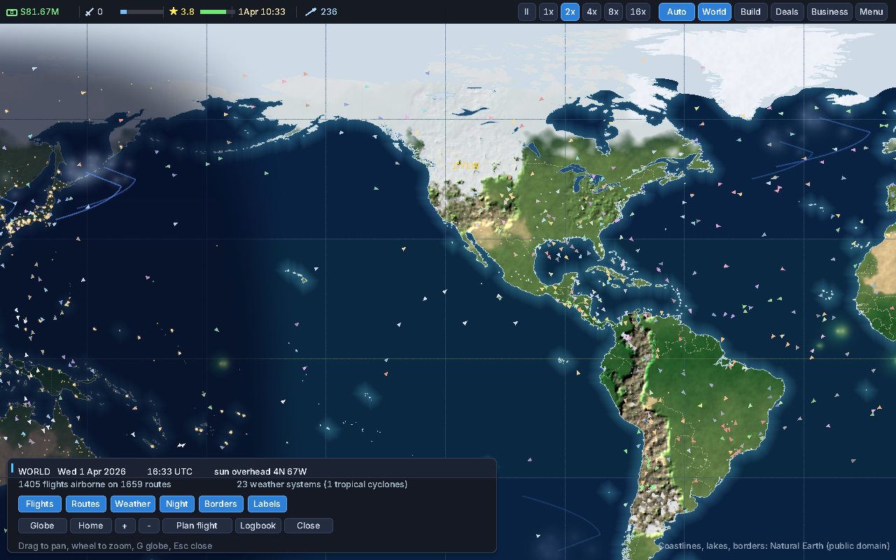
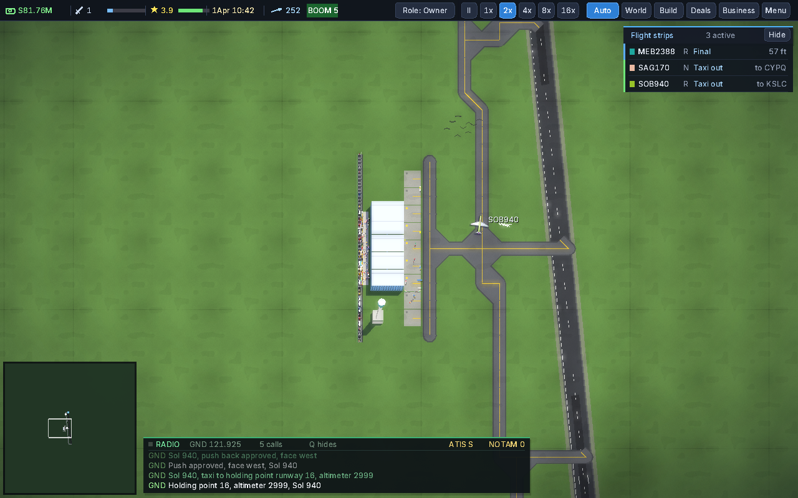
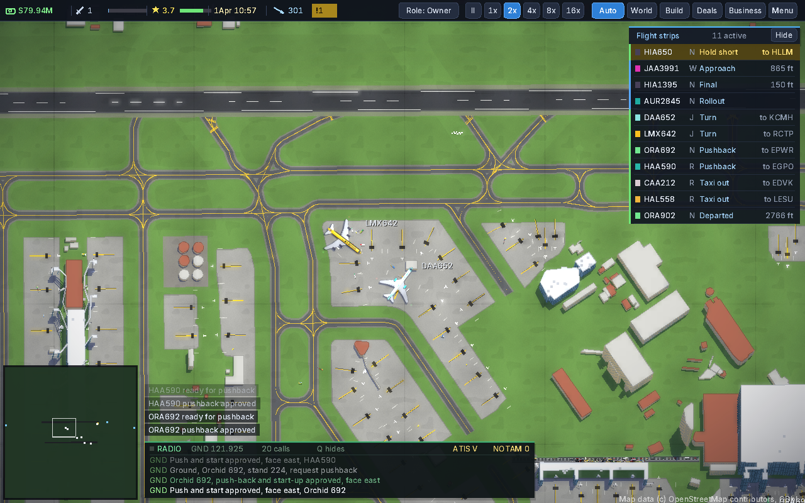

Project · Airport management simulation
AirportSim
Run an airport — inside a world that flies whether you watch it or not.
This section keeps three things separate, on purpose: the game today (verified), what is being built (active work), and the long-term vision (intent, not inventory).
About — two scales, one simulation
Global scale: a living aviation network runs across a real-Earth map — 4,531 airports, flights airborne around the clock, day and night sweeping the map, weather systems and real METAR reports, incidents that close runways.
Airport scale: inside that world you own and operate one airport — gates, construction, money, airline deals — or step into the work itself: pilot, air traffic controller, passenger, ramp worker, gate agent, security, airport firefighter. Eight playable roles, one coherent simulation underneath all of them. It is not an idle tycoon with mini-games attached; the management game and the operational game are the same world seen from different seats.
The game today — verified
Established by a full baseline audit on 2026-10-31 (build, launch and test results on the engineering & testing page):
- A living world network: in the captured test session, 1,405 flights airborne on 1,659 routes, under 23 weather systems — a reported baseline observation, not a guaranteed constant
- Airport ownership play: construction, gates, economy, airline deals, a home airport that can start half-broken and be built up
- Ground operations and air traffic control at 26 real layouts (Boston, Heathrow, Kelowna and 23 more)
- Eight playable roles in the same simulation
- Weather with real METAR data; country and locale data for 232 territories
- Saves that migrate forward across versions — fixtures from five versions back load cleanly in the test suite today
Check totals are the adoption assessment's measured results. They show the tested behaviour holds; they are not, by themselves, proof that every feature works — the per-system grades live on the systems page.



What is being built
M1 — “Green gate & safe repository” — is complete and accepted (2026-11-01): the strict gate passes from a fresh clone of the default branch, the repository trap is closed, and the documents agree with the code again. What comes next was re-ordered by the owner after M1 (dated update, 2026-11-01): the studio's unified website first; then the AirportSim engine phase — beginning with an evidence-backed engine review and a proposed first milestone, reviewed before any engine change; Development Mode follows only after the engine work reaches its accepted completion milestone. Neither the engine phase nor Development Mode has begun, and nothing on this site describes either as done. M1's criteria, for the record:
- A clean clone of the default branch passes the strict release gate
- Test counts at or above the baseline (162,315 / 9,676), zero failures
- The automated pipeline passes on the same commit
- The source diff contains only the approved one-line gate fix (+ justified kin)
- The five documentation discrepancies are reconciled
- The default-branch problem is closed by the owner's approved route
All eight were satisfied with evidence — the details live on the engineering & testing page. Still openly unresolved, and staying on the register: Windows remains unverified (K3), and the full end-to-end matrix has not yet been rerun on the current version (K6).
The long-term vision
Intent, not inventory: a sophisticated, polished airport simulation where depth serves decisions — a new player can get in and enjoy it, the living world keeps surprising its owner, and the business game underneath rewards long-term thinking. The phases that lead there are on the roadmap page, each with the gate that must pass before the next begins.